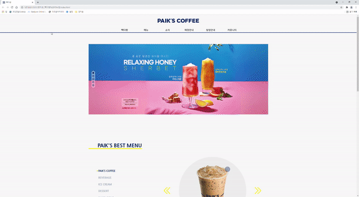

- NAME : 강다혜
- BIRTH : 1992.11.18.
- Address : 서울시 양천구 신월동
- MOBILE : 010-5800-4251
- EMAIL : gyangtto@gmail.com
로딩중...
THE COLORFUL
PUBLISHER DA HYE
다: 다채로운 아이디어로
혜: 혜택을 누리는 기분을 드리고싶은
웹 퍼블리셔, 강다혜 입니다.
스크롤바를 내리면 작품을 감상할 수 있습니다.
ABOUT ME
VISION
저는 도전하고자 하는 일에는 끊임없이 도전하고 직접 부딪히며 경험으로 깨달음을 얻습니다.
퍼블리셔 하면 코딩이라는 생각이 들어 코딩에 대한 기초 지식을 쌓기 위해 스파르타코딩클럽의 웹개발종합반 7회차를 수료하였고,
코딩을 통해 하나씩 구현되는 웹사이트가 너무나 새롭고 흥미로워 조금 더 자세히 배워보자는 마음으로
이젠 아카데미 컴퓨터 학원에서 웹디자인(웹퍼블리셔) 실무자양성과정을 수강하게 되었고, 5월 수료 예정입니다.
저는 오프라인 매장에서 다져온 고객 지향적 사고와 소통 방식,
회사 생활을 통해 다져온 디자인 협업 능력
이 점 들을 종합적으로 적재적소하게 사용하여
최적의 사용자 경험을 제공하는 것을 목표로 늘 발전해 나가겠습니다.
WHAT CAN I DO?
저는, HTML5 & CSS3 시멘틱 페이지를 ZenCoding(EMMET), SCSS를 사용하여 코딩할 수 있습니다.
필요한 기능을 직접 구현할 수 있는 Javascript/jQuery 로직구현이 가능합니다.
다양한 그래픽 디자인과 시안, 로고 등을 Adobe Photoshop/Adobe Illustraiter/Adobe XD을 통해 제작 할 수 있습니다.
클라이언트의 요구사항을 우선으로 하며, 사용자의 만족도에 영향을 미치는 like, understand, use
3요소를 적절히 반영한 UI/UX 디자인이 제 목표입니다.
꾸준히 배우고 늘 성장하는 퍼블리셔가 되겠습니다.
- ZenCoding(EMMET) & SCSS
- Javascript & jQuery 로직구현
- MVC 패턴의 페이지 구성
- 반응형 웹디자인
- HTML5 DTD 유효성 검사 통과
- 웹접근성을 향상시킨 시멘틱 페이지
WORK STYLE
- 다양한 환경에 반응하도록 디자인과 UX를 구현
- 자바스크립트와 jQuery를 구현
- HTML5 시멘틱과 CSS3 웹페이지를 구현
하는 모두가 접근 가능한
웹사이트를 만들기 위해 노력하고 있습니다.
message
다른 사람이 말하는 나
-
은떠니
주변 사람 챙기기 좋아하고 입 짧고 해피한 다혜인간 강다혜는 그냥 한마디로 정리가 가능함
주변 사람 챙기기 좋아하고 입 짧고 해피한 다혜 -
다비
겉은 차가워보이지만 속은 사려깊은 사람첫 인상은 무관심한 느낌이 들었음
친해지자마자 댕댕미 분출해서 좀 놀랐음
댕댕미와 함께 엉뚱한 매력있는 분위기 메이커
-
방울
생각하는 점을 적극적으로 표현할 수 있는 동생자칫 단점이 될 수도 있지만 의견과 함께
뒷받침되는 근거를 통한 주장 큰 장점임
덤벙 거리는데 사실 꼼꼼한 점도 눈에 띄는 반전 포인트 -
곽지
12년 지기 친구로써 그냥 적어본다면1. 생각->실행
(생각만 하지 않고 생각하는 걸 실행하는 능력이 있음)
2. 밝음->긍정
(성격자체가 밝고 쾌할해서 잘 웃고
긍정적으로 보임, 에너지가 좋음)
3. 잘듣기->대화통함->관계유지good
(상대방 얘기를 잘 들어주고 진심이기 때문에 리액션 좋고
도움이 필요하면 도우려고 하고
필요한 부분에 조언을 해주고
가볍게 흘려듣지 않기 때문에
대화가 통한다는 느낌이 나게 해 줌) -
이로운
함께 새벽 스터디하며 내적친밀도 상승한 분.활기와 응원을 불어넣어주는 인간 비타민.
항상 밝은 모습을 유지하고
칼답으로 물음에 답해주는 찐 힐러.
꼭 해내겠다는 의지가 넘쳐
잠시만 보아도 그게 느껴지는 사람입니다. -
선이
모르는 걸 물어보면
같이 찾아서 해결해 주는 사람누군가가 도움을 요청하면 거절하지 않습니다.
즉각적인 피드백으로 상대방을 기분좋게 해줍니다.
위트있고 긍정적인 생각이 많아 남을 즐겁게 해줍니다. -
광회
함께 하면 참 즐거운 긍정의 여신!힘든 시간 속에도 예쁜 말과 자세로
모두를 응원해주는 엄청난 힘을 지닌 사람.
공부와 배움에 열정이 대단하고 부지런하며
주어진 과제를 악착같이 완벽하게 수행하는 으뜸 우등생! -
현우
공동체의 향상을 위해
리더쉽을 가지고 이끌어 가는 사람화합을 통해 서로의 의사소통을 원활하게 이끌어가며
단어선택이나 어감을 이쁘게 말하는 사람
SKILL
탁월한 UX분석능력과 Emmet/Zencoding 활용
-
UX/UI 디자인
사용자의 Context와 Needs를 파악하고
Problem을 해결할 수 있는 Insight 도출 -
반응형 웹표준
시멘틱을 지향하는 HTML/CSS 작성능력 보유,
자바스크립트와 제이쿼리 기반의 로직 구현 가능
SASS 전처리기와 리액트 라이브러리 활용
-
Sass Preprocessor
협업 웹코딩의 필수 기술인 SCSS를 이용한
CSS 스타일링을 원활이 사용할 수 있습니다. -
반응형 웹표준
국내 프론트엔드 시장의 대세 리액트 코드구현,
자바스크립트와 제이쿼리 기반의 로직구현 가능
ABILITY
젠코딩
HTML5
CSS
jQuery
웹기획
디자인
95%
리더쉽
적극성
창조성
사교성
책임감
정직성
온라인 이력서

‘스타일을 창조하여 그것을 섬세한 디자인으로 탈바꿈 시키고싶다’ 는 마음으로
매일 노력하고 있습니다.
HTML5 & CSS3 시멘틱 페이지를 ZenCoding(EMMET)으로 코딩할 수 있습니다.
클라이언트의 요구사항을 적극적으로 반영하는 UI/UX 디자인 능력은 저의 최고의
장점중 하나입니다.
JS 플러그인을 사용에 그치지 않고 필요한 기능을 직접 구현할 수 있는 Javascript/jQuery 로직구현이 가능합니다.
새로운 코딩기법과 디자인을 배우는 것이 정말 즐겁습니다.

UX DESIGN
작품리스트
이전 다음내가 생각하는 사용자경험 - User Experience
UX는, 단순히 사용자의 경험으로만 생각했었다.
UI는 인터페이스 그 자체로, 구조나 배열 구성 등의 설계를 하며,
그런 UI를 기반으로 한 UX는 단순 웹 전체로 오해하고 있었다.
조금 더 자세히 알아보면서, 틀린 점이 눈에 보이기 시작했다.
더 정확하게 알게 된 후 내가 느끼는 UX는, 전체적인 틀 안에서 사용자가 원하는 기능을 사용할 때
물음표(?)와 함께 불편함을 느끼기보다 자연스럽고 편리하게 사용할 수 있도록 구성해야 하며,
사용자의 만족도에 영향을 미치는 'like, understand, use' 3요소를 유지할 수 있도록
적절한 구성으로 부정적인 부분을 최소화시켜야 하는 것이라고 느껴졌다.
이런 느낌으로 성공적인 UX라고 불리는 사례들을 보니,
사람의 여러 감각과 감정의 총체적 경험을 바탕으로 어떤 제품이나 서비스를 구축해 나가는 것이 얼마나 중요한지 깨달았다.
예를 들면, 유명한 레스토랑의 테이블 위에는 식기 등이 밀리지 않도록 매트를 배치하고,
사회적 통념으로 자리 잡은 테이블 세팅법 같은 적절한 구성으로 인해 생기는 균형미는 추가로 따라오는 게 아닐까 싶다.
UX design을 테이블 위로 비유한 스케치
디자인과 UX의 차이
- 1. 병
- 병을 접시, 장식 등으로 리사이클링(Recycling)한 사례
- 2. 우유팩
- 유유팩을 지갑으로 업사이클링(Upcycling)한 사례

PORTFOLIO
1. 빽다방 (리뉴얼 디자인)
PAIK’S COFFEE Renewal Design
기존 웹사이트의 개선사항을 찾아 메인페이지를 리뉴얼 디자인하였습니다.
빽다방의 컬러 아이덴티티를 사용하여 브랜드 이미지를 강조하였으며,
간결한 레이아웃으로 전달하고자 하는 내용을 보기 쉽게 배치하였습니다.
작업프로그램 : Photoshop, Visual Studio Code
100% 개인 작업


이삭토스트 (리뉴얼 디자인)
ISAAC TOAST Renewal Design
기존 웹사이트의 개선사항을 찾아 메인페이지를 리뉴얼 디자인하였습니다.
이삭토스트의 컬러 아이덴티티를 사용하여 브랜드 이미지를 강조하였으며,
간결한 레이아웃으로 전달하고자 하는 내용을 보기 쉽게 배치하였습니다.
작업프로그램 : Photoshop, Visual Studio Code
100% 개인 작업


단양 여행(추천여행지) 사이트 디자인
DANYAGN TRAVEL Site Design
4가지 카테고리로 나누어 단양의 대표적인 문화를 소개하는 원페이지
형식의 사이트를 제작하였습니다. 도담삼봉을 담은 로고마크를
디자인하였으며, 로고에 사용된 컬러를 적용하여 통일성을 주었습니다.
작업프로그램 : Photoshop, Illustrator, Visual Studio Code
100% 개인 작업


필요한 기능을 직접 javascript/jquery 로직 구현
‘스타일을 창조하여 그것을 섬세한 디자인으로 탈바꿈 시키고싶다’ 는 마음으로 매일 노력하고 있습니다.
HTML5 & CSS3 시멘틱 페이지를 SCSS, ZenCoding(EMMET)으로 작성할 수 있습니다.
클라이언트의 요구사항을 적극적으로 반영하는 UI/UX 디자인 능력은 저의 최고의 장점중 하나입니다.
JS 플러그인을 사용에 그치지 않고 필요한 기능을 직접 구현할 수 있는 Javascript/jQuery 로직구현이 가능합니다.
새로운 코딩기법과 디자인을 배우는 것이 정말 즐겁습니다.
for문과 다중 if문의 결합한 로직 구현
SASS, Emmet 활용
페이지 전체의 계층구조를 입체적으로 분석할 수 있는
실무형 코딩기법 Emmet을 사용할 수 있어 업무시간을 단축시킬 수 있을뿐 아니라,
유지보수도 더욱 쉽고 정확하게 처리할 수 있습니다.
SCSS의 가장 큰 장점인 변수와 Mixin 기능을 적극 활용하여
CSS 스타일링을 할 수 있습니다.
Sprite-Image와 IR(Image Replacement)기법에 능숙
id, class를 남발하지 않고 원하는 요소를 셀렉팅할 수 있는 능력,
CSS3 Transform, Transition, Keyframes을 이용한 애니메이션 효과 구현
직접 구현한 슬라이드
CONTACT
귀사에 입사를 지원합니다.
저의 웹퍼블리싱 이야기 입니다.
질문을 선택하시면 정리된 답변을 보실수 있습니다.
- 1. html5의 가장 큰 특징은 무엇일까요? 화살표
-
HTML5는 웹 문서를 제작하는 데 쓰이는 기본 프로그래밍 언어 HTML(hypertext markup language)의 최신규격
웹페이지를 구성하는 데 있어 지배적인 역할을 하는 마크업 언어(markup language)HTML5 의 등장으로 CSS3, 자바스크립트 API를 통한 기능의 확장과 결합을 통해 기존의 HTML 이상의 의미를 부여하게 되었고
기존의 Active-X 와 같은 플러그인인 외부 기술에 의존했던 것을 걷어냄으로서 웹표준, 웹접근성을 한층 높여놓고 있는 특징을 가지고 있습니다. - 2. 웹표준, 웹접근성, 시멘틱웹에 대해 설명해 주세요. 화살표
-
웹표준 : 웹 표준은 W3C에서 제정하고 있는 공식 표준기술
웹접근성 : 웹 사이트에서 제공하는 정보를 차별 및 제한 없이 동등하게 이용할 수 있도록 보장하는 것
장애인 및 고령자 등 모든 사람을 포함하며 다양한 Platform 및 Device 와 웹 브라우저 등의 모든 환경에서 이용할 수 있는 것시멘틱 웹 : 시멘틱 웹은 semantic이라는 단어 그대로 의미론적인 웹을 의미
태그 자체가 가지고 있는 의미에 맞게 HTML 문서를 작성하여 브라우저, 혹은 컴퓨터가 이해할 수 있는 문서를 작성하고자 하는 것 - 3. 자바스크립트 라이브러리 사용시 가장 큰 장점은? 화살표
-
자바스크립트 라이브러리의 대표적인 jQuery는 사이트 첫 화면에 jQuery는 가볍고, DOM탐색이나 이벤트, 애니메이션, ajax등을 활용 시 편리한 점을 장점으로 적은 것을 확인할 수 있습니다.
제게 있어서 큰 장점은 DOM탐색, 애니메이션 활용은 보다 js 파일의 가독성을 높인점과 작성 시간 단축의 효과를 장점으로 꼽고 싶습니다.
- 4. .setInterval() 함수에 대해 설명하시오. 화살표
-
setInterval() 함수는 어떤 코드를 일정한 시간 간격을 두고 반복해서 실행하고 싶을 때 사용합니다.
예를들어 웹페이지의 특정 부분을 주기적으로 업데이트해줘야 하거나,
어떤 API로 부터 변경된 데이터를 주기적으로 받아와야 하는 경우 setInterval()함수가 유용합니다. - 5. CSS 미디어쿼리는 어떤 역할을 수행하는지 답하시오~! 화살표
-
미디어 쿼리는 CSS3에 포함되어 있으며, 컨텐츠의 변경없이 주로 화면의 크기에 따라 스타일 시트를 달리하여 적절한 모양을 보여줄 수 있습니다.
더욱 궁금하신 점은 면접시 말씀드리겠습니다. 감사합니다~!
본 페이지는 저의 개인 포트폴리오용으로 제작되었으며, 상업적인 목적과 관련이 없음을 알려드립니다.